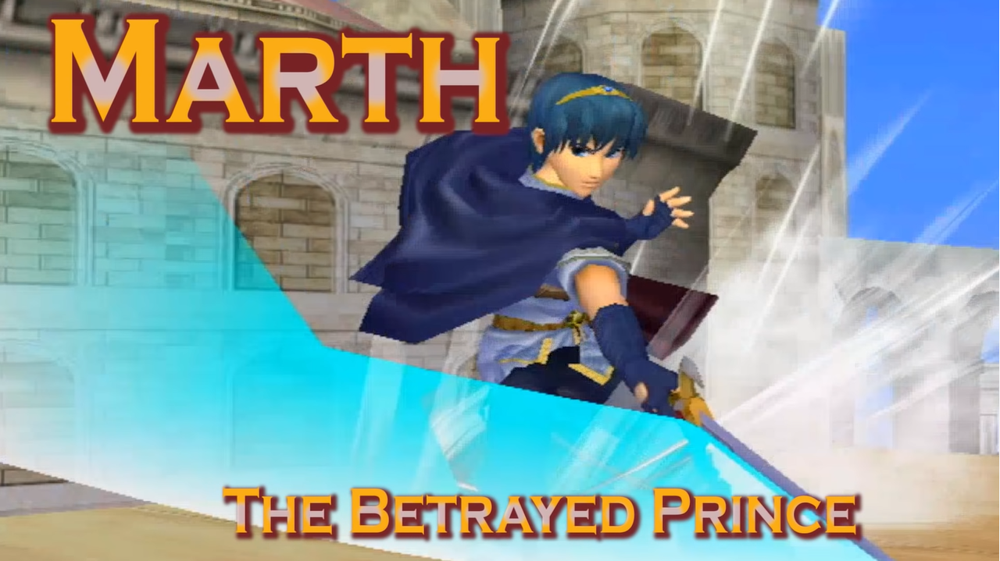

Marth, plus connu sous le nom du Roi-Héro, est le protagoniste de la série Fire Emblem. Prince d'Altea, Marth utilise sa lame, Falchion, pour combatre ses adversaires dans SSBM. Maintenant reconnu comme étant le meilleur personnage contre Fox et Falco, Marth a récement prouvé a quel point il peut etre dominant avec ses attaques longues et sécuritaires. Utilisé par un des meilleur joueur au monde, Zain nahgmi, Marth peut rivalisé avec n'importe qui.

Marth utilise son agilité et ses longues attaques pour combattre ses adversaires tout en restant a distance. son agilité le rend expert dans l'art du bait and punish (une tactique qui sagit d'inviter l'adversaire a attaquer, éviter son approche et punir le coup raté). il est impossible de parler de Marth sans mentionner son throne, Final Destination. Final Destination est un des 5 terrains dont les joueur peuvent choisir en tournoi, ce terrain, long et plat, fait en sorte que les combos de Marth deviennent devastateurs, surtout comme Fox et Falco.